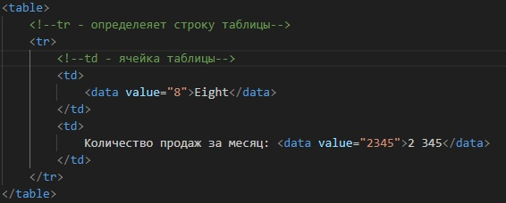

article - Независимый блок контента, например,
статья или пост в блоге
Тег section
Section - определяет раздел в документе.
Тег nav
Тег aside
Теги заголовков
Заголовок страницы (может быть только
один тег h1 в документе)
Подзаголовок h2
Подзаголовок h3
Подзаголовок h4
Подзаголовок h5
Подзаголовок h6
Тег hgroup
hgroup - используется для группирования заголовков
веб-страницы или раздела. Внутри располагаются один
тег из заголовков, за которым следует ноль или больше p тегов
The reality dysfunction
Space is not the only void
Тег header
header - шапка страницы
Тег footer
Тег address
address - содержит адрес (контактные данные создателя сайта)
Тег p
p - Абзац текста
Тег hr
разделительная линия абзацев
Тег pre
pre - представляет собой предварительно отформатированный текст,
который должен быть представлен точно так, как написано в HTML-файле.
Тег blockquote
blocjquote - указывает на то, что заключённый в нем текст является развёрнутой цитатой.
I contend that we are both atheists. I just believe in one fewer
god than you do. When you understand why you dismiss all the other
possible gods, you will understand why I dismiss yours.
— Stephen Roberts
Теги ul и ol
Это ul список (неупорядоченнный)
li - определяет элемент списка
li - определяет элемент списка
Это ol список (упорядоченный)
li - определяет элемент списка
li - определяет элемент списка
Тег menu
menu - предназначен для отображения списка пунктов меню
Тег dl
dl - элемент списка описаний
Тег dt - Список терминов
Тег dd - описание терминов
Тег figure
figure - Используется для группирования любых элементов, например, изображений и подписей к ним.
Тег figcaption - используется для подписи группирования пар элементов
Тег main
main - Предназначен для основного контента
Тег search
search - раздел страницы, который используется для поиска
Тег div
div - определяет контейнер для группировки элементов
em - предназначен для слов, которые имеют
подчёркнутый акцент по сравнению с окружающим текстом
Тег strong
strong - указывает на то, что его содержание имеет
большое значение, серьёзность или срочность
Тег small
small - уменьшает размер шрифта на единицу по сравнению с обычным текстом
Тег s
s - отображает текст как перечеркнутый
Тег cite
cite - представляет из себя ссылку на источник цитаты
Тег q
q - используется для выделения в тексте цитат
Тег dfn
dfn - используется для указания термина, определяемого в контексте фразы или предложения
Тег abbr
abbr - указывает, что последовательность символов является аббревиатурой
CGI
обозначается протокол, с помощью которого любые внешние программы взаимодействуют
с веб-сервером. С помощью CGI на сервере можно выполнять программы на любом
языке программирования и результат их действия выводить в виде веб-страницы.
Теги ruby, rt и rp
ruby - предназначен для добавления небольшой аннотации сверху или снизу от заданного текста.
Такая форма записи преимущественно используется для идеографической письменности вроде китайского языка,
но может применяться и для других языков, если требуется написать один текст над другим.
Сам тег ruby выступает контейнером для тега rt, он и формирует аннотацию к тексту,
после которого идет; а также rp, этот тег предназначен для браузеров, которые не поддерживают ruby.
漢字
Тег data
data - отображает заданное значение в машиночитаемом формате.
Он часто используется в сочетании с другими тегами для более удобного представления
числовых или статистических данных.
Eight
Количество продаж за месяц: 2 345

Тег time
time - помечает текст внутри тега как дата, время или оба значения
запущен первый искусственный спутник Земли.
Тег code
code - используется для отображения кода (скрипта)
print('Hello world!')
Тег var
var - используется для выделения переменных компьютерных программ
В данном примере делается запрос к базе данных для получения поля content_title
из таблицы content, причем должно удовлетворяться условие
section_id = 1.
Тег samp
samp - используется для отображения текста, который является результатом вывода компьютерной программы или скрипта
Проверка, поддерживает браузер JavaScript 1.3 или нет.
<script language="JavaScript1.3"> JS13 = 1;
</script>
<script language="JavaScript">
if (window.JS13) document.write("Ваш браузер поддерживает JavaScript
1.3");
</script>
В результате выполнения скрипта вы увидите текст Ваш
браузер поддерживает JavaScript 1.3, в том случае, если браузер
работает с версией 1.3.
Тег kbd
kbd - используется для обозначения текста, который набирается на клавиатуре или для названия клавиш
Для быстрого закрашивания выделенной области цветом переднего плана
используйте комбинацию клавиш <Alt>+<Backspace>
или <Alt>+<Delete>.
Для закрашивания выделенной области фоновым цветом
воспользуйтесь комбинацией
<Ctrl>+<Backspace> или
<Ctrl>+<Delete>.
Тег sub
sub - отображает текст в виде нижнего индекса
e2
Тег sup
sup - отображает текст в виде вверхнего индекса
ex2
Тег i
i - устанавливает курсивное начертание шрифта
Тег b
b - устанавливает жирное начертание шрифта
Тег u
u - добавляет подчеркивание к тексту
Тег mark
mark - помечает текст как выделенный
Тег bdi
bdi - указывает фрагмент текста, который должен быть
изолирован от изменения направления вывода текста
Тег bdo
bdo - устанавливает направление вывода текста и преимущественно предназначен
для использования с языками, где чтение происходит справа налево
Тег span
span - тег для выделения текста
Тег br
br - отвечает за переход на новую строку
Тег wbr
wbr - указывает браузеру место, где допускается делать перенос строки в тексте, если этого требует ширина родительского элемента
Самое длинное слово из химии
метоксихлордиэтиламинометилбутиламиноакридин
Тег ins
ins - предназначен для выделения текста,
который был добавлен в новую версию документа.
Подобное форматирование позволяет отследить,
какие изменения в тексте документа были сделаны
Тег del
del - используется для выделения текста, который был удален в новой версии документа
Тег picture
picture - адаптирует картинки под разные устройства и поддерживаемые форматы.
Тег source
source - вставляет звуковой или видеофайл для тегов audio и video. Обобщенно такие файлы называются медийными
Тег iframe
iframe - создает плавающий фрейм, который находится внутри обычного документа, он позволяет загружать в область заданных размеров любые другие независимые документы
Тег embed
embed - используется для загрузки и отображения объектов (например, видеофайлов, флэш-роликов,
некоторых звуковых файлов и т.д.), которые исходно браузер не понимает. Как правило, такие объекты
требуют подключения к браузеру специального модуля, который называется плагин,
или запуска вспомогательной программы